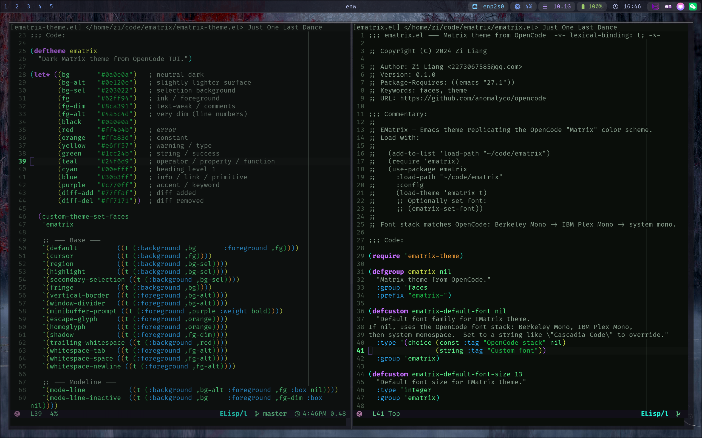
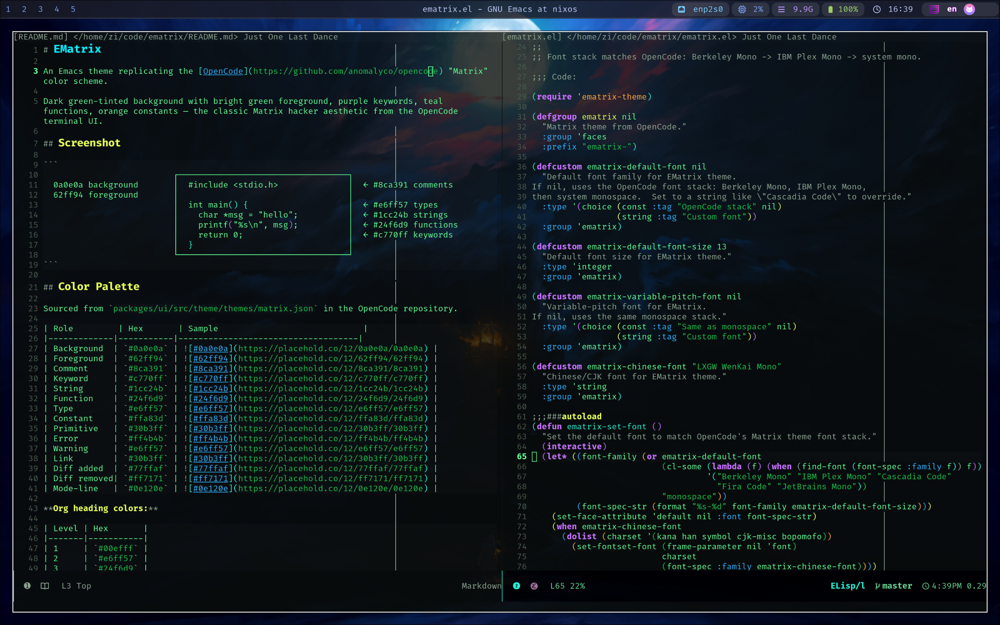

Introducing EMatrix — A Matrix-Inspired Emacs Theme
Table of Contents


EMatrix is an Emacs theme that replicates the OpenCode "Matrix" color scheme.
Dark green-tinted background with bright green foreground, purple keywords, teal functions, orange constants — the classic Matrix hacker aesthetic from the OpenCode terminal UI.
1. Color Palette
Sourced from packages/ui/src/theme/themes/matrix.json in the OpenCode repository.
| Role | Hex |
|---|---|
| Background | #0a0e0a |
| Foreground | #62ff94 |
| Comment | #8ca391 |
| Keyword | #c770ff |
| String | #1cc24b |
| Function | #24f6d9 |
| Type | #e6ff57 |
| Constant | #ffa83d |
| Primitive | #30b3ff |
| Error | #ff4b4b |
| Warning | #e6ff57 |
| Link | #30b3ff |
| Diff added | #77ffaf |
| Diff removed | #ff7171 |
| Mode-line | #0e120e |
Org heading colors:
| Level | Hex |
|---|---|
| 1 | #00efff |
| 2 | #e6ff57 |
| 3 | #24f6d9 |
| 4 | #c770ff |
| 5 | #30b3ff |
| 6 | #ffa83d |
| 7 | #1cc24b |
| 8 | #8ca391 |
2. Why Build a "Matrix" Theme?
OpenCode is an AI-powered CLI coding agent with a distinctive green-on-dark terminal appearance. After using OpenCode daily, I wanted the same visual consistency inside Emacs — where I spend most of my time reading and writing code.
The Matrix aesthetic isn't just cosmetic. The high-contrast green-on-dark palette reduces eye strain during long sessions, and the carefully chosen semantic colors (purple for keywords, teal for functions, orange for constants) make code structure immediately recognizable.
3. Installation
3.1. package-vc-install (Emacs 29+)
(unless (package-installed-p 'ematrix)
(package-vc-install "https://github.com/liangzid/ematrix"))
3.2. use-package
(use-package ematrix
:vc (:url "https://github.com/liangzid/ematrix"
:rev :newest)
:config
(load-theme 'ematrix t)
(ematrix-set-font))
3.3. Manual
git clone https://github.com/liangzid/ematrix ~/.emacs.d/elpa/ematrix
(require 'ematrix)
(load-theme 'ematrix t)
4. Font
EMatrix matches the OpenCode font stack:
| Priority | Font | License |
|---|---|---|
| 1 | Berkeley Mono | Commercial ($75) |
| 2 | IBM Plex Mono | Open Source (SIL OFL) |
| 3 | Cascadia Code | Open Source (SIL OFL) |
| 4 | Fira Code | Open Source (SIL OFL) |
| 5 | JetBrains Mono | Open Source (SIL OFL) |
The first font found on your system is used automatically. On most Linux
systems, installing fonts-ibm-plex is the quickest way to get a close match:
# Debian/Ubuntu
sudo apt install fonts-ibm-plex
# Arch
sudo pacman -S ttf-ibm-plex
# macOS
brew install font-ibm-plex
Set the font manually with M-x ematrix-set-font, or call it from your init:
(setq ematrix-default-font-size 14)
(ematrix-set-font)
Override with a custom font:
(setq ematrix-default-font "Cascadia Code")
(setq ematrix-default-font-size 13)
(ematrix-set-font)
The CJK font defaults to LXGW WenKai Mono. Change it:
(setq ematrix-chinese-font "Noto Serif CJK SC")
5. Supported Packages
EMatrix provides faces for:
- Syntax:
font-lock,rainbow-delimiters,highlight-indentation - Completion:
company,vertico,ivy,marginalia - Org Mode: headings, blocks, code, links, tags, todos, agenda, checkboxes
- Markdown: headings, code, links, blockquotes, emphasis
- Version Control:
diff,magit,git-gutter - UI:
mode-line,doom-modeline,tab-bar,tab-line - Tools:
eglot,citre,evil,telega,hl-line - Terminal:
term,ansi-color
6. File Structure
ematrix/ ├── ematrix.el # Package entry point, font setup, customization └── ematrix-theme.el # deftheme with 130+ face definitions
7. Credits
Color scheme sourced from OpenCode by AnomalyCo, used under the MIT license.
The theme is at github.com/liangzid/ematrix.
8. License
MIT